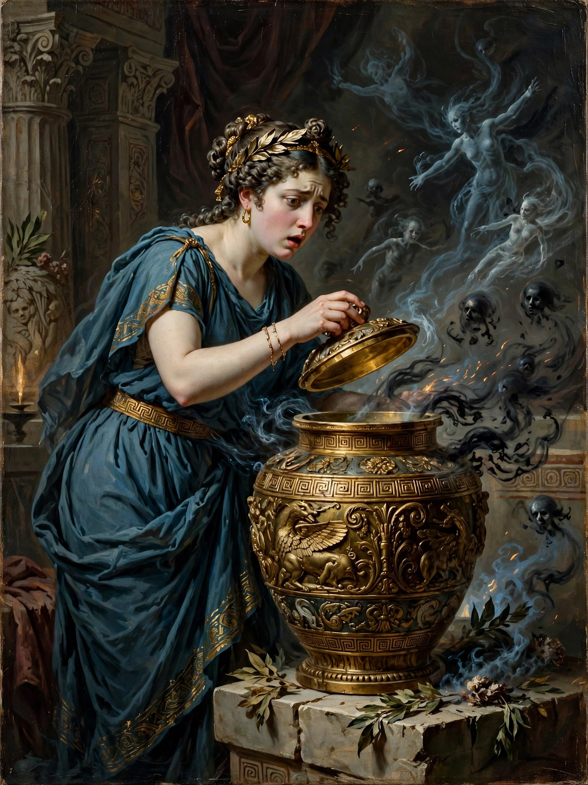

Pandora

In Greek mythology, Pandora (Greek: Πανδώρα, "all-gifted" or "all-giving") was the first human woman, fashioned from clay by Hephaestus on the orders of Zeus as part of the punishment of humanity for Prometheus's theft of fire. Her story, told by Hesiod in the Theogony and Works and Days, explains the origin of evil and suffering in the world.
The myth
Each god gave Pandora a gift: beauty from Aphrodite, cunning and curiosity from Hermes, and so on. Zeus sent her to Epimetheus, Prometheus's brother, who — despite warnings never to accept gifts from Zeus — took her in. Pandora brought with her a jar (Greek pithos; the familiar "box" derives from Erasmus's Latin mistranslation) which she was told never to open. Her curiosity prevailed: she lifted the lid and released all the evils of the world — disease, toil, sorrow and death. She closed it in time to keep only one thing inside: Elpis, Hope.
Interpretation
Scholars have long debated whether hope's remaining in the jar means it is preserved for humanity or withheld from it. Hesiod's telling is often read as misogynistic — woman as the source of man's troubles — and Pandora has been compared to Eve in Genesis. Yet older traditions suggest Pandora may descend from an earth-goddess figure, "all-giving", and vase paintings show her rising from the ground. The phrase "to open Pandora's box" has become proverbial for an act that unleashes many unforeseen troubles.
See also: Prometheus, Hesiod, Greek mythology, Epimetheus.